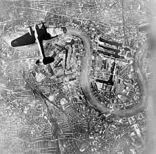

The Battle of Britain

The Battle of Britain was a fierce aerial campaign fought between July and October 1940, as Nazi Germany sought to destroy the Royal Air Force (RAF) and pave the way for an invasion of Britain. With Europe under Hitler’s control, the United Kingdom stood alone, facing relentless bombing raids from the German Luftwaffe. This battle wasn’t just about air superiority—it was a fight for survival, one that would determine whether Britain could resist Nazi domination.
The Luftwaffe Assault
The Germans gathered their elite forces: Army Group South, led by Field Marshal Erich von Manstein, and Army Group Center, under Field Marshal Günther von Kluge. At Kursk, they faced a massive Soviet defense network, which had been meticulously prepared for months. The Soviets knew an attack was coming, and they constructed deep, layered defenses that stretched over 150 miles.
The Blitz and Civillain Impact
As the RAF proved more resilient than expected, the Luftwaffe shifted its focus in September 1940 to bombing British cities in a campaign known as the Blitz. London and other major cities were subjected to nightly air raids, causing mass destruction and civilian casualties. While devastating, this shift allowed the RAF to recover, repair airfields, and maintain control of the skies.

Britain's Defiance and German Miscalculation
Despite heavy losses, the RAF adapted quickly, rotating pilots, repairing damaged airfields, and using radar to intercept German raids. The turning point came when the Luftwaffe, frustrated by British resistance, shifted focus to bombing cities in what became known as the Blitz. While devastating for civilians, this change allowed the RAF to regroup and recover.
Germany's Strategic Failure
Despite their initial dominance, the Luftwaffe suffered growing losses. German pilots had to fly long distances over enemy territory, while British fighters had home advantage. The RAF’s resistance, combined with effective coordination and superior radar technology, wore down German forces. By late October, Hitler abandoned his invasion plans, marking a decisive failure for Nazi Germany.
A Pivotal Victory
The Battle of Britain proved that Nazi Germany was not invincible. It was a triumph of strategy, technology, and sheer determination. The British people, battered but unbroken, had repelled Hitler’s forces and ensured that the United Kingdom would remain a bastion of resistance. This victory not only prevented German occupation but also set the stage for Allied offensives that would ultimately lead to Germany’s defeat in 1945.